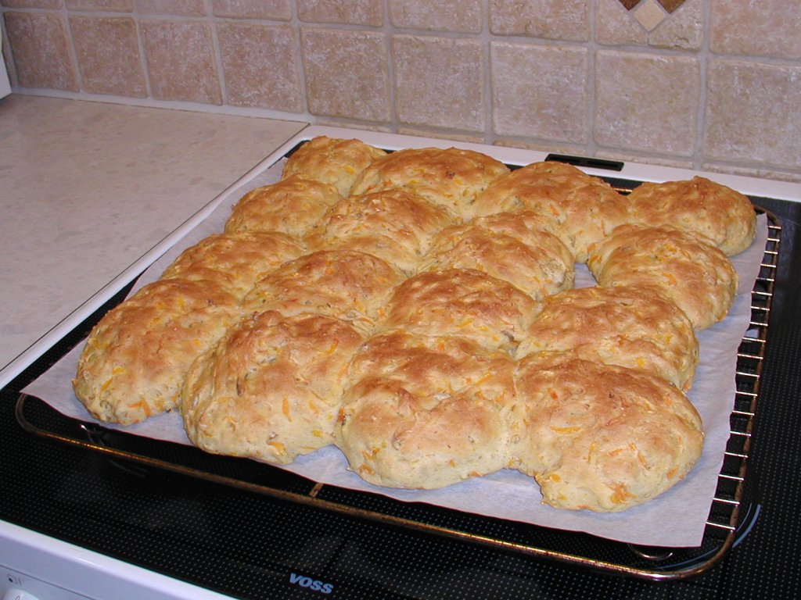

Gærbrød
Tid
Gærbrød tager tid!
Samlet set tager et gærbrød op til 2 timer fra start til slut - incl æltning, hævning, bagning og hviletid. Mere hvis du skal have spændende ingredienser i, som ikke lige er klar.
En del af tiden kan du bruge på oprydning, men der er også meget pussenussen.
Samlet set tager et gærbrød op til 2 timer fra start til slut - incl æltning, hævning, bagning og hviletid. Mere hvis du skal have spændende ingredienser i, som ikke lige er klar.
En del af tiden kan du bruge på oprydning, men der er også meget pussenussen.
Har du travlt?
Har du lige fundet ud af, at der kommer gæster?
Har du ikke en krumme i huset??
Gå ikke i panik! Bag et snydebrød i stedet, det er klar til servering på en time! Og der er næsten ingen oprydning.
Gå ikke i panik! Bag et snydebrød i stedet, det er klar til servering på en time! Og der er næsten ingen oprydning.
Grundopskrift
Det fede ved at bage brød med gær er, at man kan putte en masse kærlighed i det,
og det er stort set umuligt at lave forkert.
Man kan tilsætte alt muligt, og hvis det er på vej til at gå galt, så kan man normalt redde det. Og man har god tid til redningsaktioner, der er ikke noget, der haster vildt meget.
Men nu prøver vi :-)
Hvis man holder sig nogenlunde til dette, så går det ikke helt galt:
Man kan tilsætte alt muligt, og hvis det er på vej til at gå galt, så kan man normalt redde det. Og man har god tid til redningsaktioner, der er ikke noget, der haster vildt meget.
-
Hvis din dej bliver for tør, så tilsæt mere vand
(og husk at ælte grundigt bagefter!)
-
Og hvis din dej bliver for våd, så overvej først,
om den nu også er for våd?
Specielt hvis der er gryn eller kerner i, så skal dejen være
fugtig, det suger nemlig.
Hvis dejen stadig efter hævning er for våd, så lav brud (a.k.a. klat-boller) i stedet for hele brød.
Pas virkelig på ikke at tilsætte for meget mel for at redde en våd dej, du ender med beton i stedet for brød. - Hvis din dej ikke vil vokse, så lad det hæve lidt længere tid, det kommer, det kommer.
Men nu prøver vi :-)
Hvis man holder sig nogenlunde til dette, så går det ikke helt galt:
1 brød
|
2 brød
|
*) Suger væske - tilsæt lidt mere vand, ellers bliver dejen ikke til at arbejde med.
**) Indeholder en del væske - for at kunne forme brød, skal du nok tilsætte lidt mindre vand.
Havregrynsbrød
Brødene herunder er bagt med 1 kg hvedemel,
100 g grahamsmel og 100 g havregryn.
(De er med andre ord bagt før jeg fandt ud af, hvor irriterende grahamsmel er: Det giver brødet en dejlig gylden farve, men posen med grahamsmel harskner hurtigt pga det høje indhold af fedt, og det gør intet for dig, som fuldkornsmel ikke gør bedre.)
(De er med andre ord bagt før jeg fandt ud af, hvor irriterende grahamsmel er: Det giver brødet en dejlig gylden farve, men posen med grahamsmel harskner hurtigt pga det høje indhold af fedt, og det gør intet for dig, som fuldkornsmel ikke gør bedre.)
Om ingredienserne
Hvedemel
kan også være fuldkornshvedemel, fx speltmel.Fuldkornshvedemel indeholder alle skal og kimdele i finmalet tilstand. En anden måde at sige det er, at grahamsmels-delen ikke er siet fra. Hvis man bruger fuldkornshvedemel, skal man passe på med at komme en masse andre typer mel i dejen også, for så ender den med ikke at kunne hæve.
Jeg foretrækker at bruge almindeligt hvedemel, og så tilsætte lidt fuldkornsrugmel - men prøv dig frem, det er en smagssag.
Sukkeret
er ikke strengt nødvendigt. Det fungerer først og fremmest som "boost" for gæren.Med andre ord æder gæren af sukkeret, før den går i gang med melen. Derfor smager det færdige brød normalt ikke sødt.
Fedtstof
tilsættes mest for at brødet ikke skal være så tørt at spise (særlig på andendagen).Jeg bruger normalt olivenolie - det klæder brødet virkelig godt. Man behøver ikke tilsætte så meget, som hvis man bruger flydende margarine.
Vand
kan erstattes helt eller delvist med mælkeprodukter.(Sødmælk i den klassiske franskbrødsopskrift, jeg bryder mig bare ikke om smagen :-) )
Gæren
, kunne man godt argumentere for, er unødvendig - for hvis man lader en fugtig dej stå en dags tid i stuetemperatur, så skal den nok fange en masse svampe, som har gær-virkning (og diverse bakterier). Meeeen.... det er nu rart at vide, at den svamp, man bruger, ikke skider toksiner ud!Hvis gæren har misfarvede pletter, er den enten halvdød, er overgået til skimmelform (det sker af sig selv, når gær får ilt), eller også vokser der kannibal-svampe ovenpå gærkulturen. Smid den ud, eller bræk i det mindste det misfarvede af. Du bør IKKE bruge den misfarvede del.
Hvis du ender med at have for lidt gær i forhold til opskriften, så pyt med det - så skal dejen bare hæve længere. Tilsæt evt lidt mere sukker, for at holde liv i det.
Tørgær er noget skrammel, brug det kun i nødstilfælde. Det har meget skuffende holdbarhed, man kan ikke stole på sidste salgdato, og det er umuligt at se på konsistensen, om det har mistet sin virkning.
Salt
er til gengæld absolut nødvendigt. Uden salt smager brød kedeligt!Ikke-hævende typer mel
(rugmel, grahamsmel) hæmmer hævningen, fordi de blander sig med protein-mel-klister-kæderne, som derved bliver svagere. Gasboblerne fra gæren vil altså nemmere kunne dampe af (det hjælper desværre ikke at tilsætte ekstra gær).Husk at komme mere vand i (beregn ud fra den samlede mængde mel og kerner/gryn; hvis den er 1,2 kg, så skal du bruge cirka 6½ dL vand - eller slump dig frem).
Kerner, gryn og revne ting
(gulerødder, kogte kartofler, æbler, you name it) forstyrrer næsten ikke hævningen, fordi det ligger for sig selv, og dejen vokser udenom dem.Men pas på med for mange kerner! Det kan man knække tænder på... Kog dem evt først 5 minutter i mikroovn for at gøre dem blødere, det er også godt at gøre med knækkede kerner.
Jeg foretrækker at bruge gryn (havregryn), solsikkekerner eller græskarkerner, for de er ikke så hårde.
Husk ekstra vand til kerner og gryn!
Obs! Lad nu være med at komme lunkent eller varmt vand i!
Det er fuldstændig unødvendigt,
læs hvorfor her.
Fremgangsmåde
-
Find en stor røreskål (5 eller 6 L).
Bland tørstoffet, dvs mel, gryn, korn og salt (piskeris eller grydeske).
(Ikke sukkeret!) -
Vej fedtstoffet i, dæk det med melet.
(Gæren kan ikke lide at blive fedtet ind.) -
Smuldr gæren i en kop, hæld sukkeret på. Kom en lille bitte smule vand på.
Rør med en gaffel (eller bagsiden af en teske), indtil det bliver tyndt som kakomælk. - Kom den flydende gær i melet.
- Vej vandet i.
-
Ælt!
Og du bliver bare ved. Det er nu, du skaber konsistensen i brødet! det man kalder "krummen".
Hvis du tror, du er færdig, men ikke er helt sikker, så bliv ved lidt længere, det skader bestemt ikke ;-)
Obs: I løbet af ganske få minutter bliver dejen meget træg og træls at arbejde med. Det er fordi, proteinerne i melet har dannet lange kæder (plastik). Men det er vigtigt, du ælter videre efter dette punkt, for jo læææængere du trækker kæderne, desto flere dage holder brødet sig lækkert. - Form en kugle af dejen.
-
Hæv første gang i skålen, cirka 30 - 45 minutter under et (fugtigt) klæde.
Hvis du havde for lidt gær, så forlæng helst denne periode. Dejen skal blive dobbelt så stor (eller større).
Ryd op imens.
-
Form brød.
Arbejd så nænsomt som muligt med dejen i denne omgang - lad være med at ælte igen!
Det eneste, en ekstra æltning ville gøre her, var, at slå luften ud af dejen og gøre brødet mere kompakt.
Hvis du laver to brød af én klump, så læs her, hvordan man gør det uden at mase al luften ud. -
Hæv anden gang på bageplade, cirka 30 - 45 minutter under et (fugtigt) klæde.
Brødene skal helst hæve til dobbelt størrelse igen.
Ryd op igen.
-
Bag i cirka 20-25 minutter ved 225°C - midt i ovnen.
Når man kender sin ovn (alle afviger lidt), kan man godt se på brødet, hvornår det er færdigt. Men ellers er et husmoder-trick et klappe det varme brød under bunden (og, ja, du kan brænde dig!) og høre, om det lyder "hult". -
Tag brødet af pladen og læg det på en rist.
Lad det køle lidt (mindst 15-20 minutter), før du begynder at skære det.
- Hvis du kan lide hård skorpe, så lad brødet hvile uden noget over.
-
Hvis du vil have en blød skorpe,
så dæk brødet med et viskestykke efter de første 5 minutter.
- Hvis du er kommet til at bage brødet alt for længe, så lad det køle i en lukket plastikspose i stedet, så du holder mest muligt på den sidste fugt.
Varianter
Der er masser af muligheder for at lave om,
jeg har lavet en masse slak i opskriften allerede, og du klør bare på :)
Bryd gerne alle regler, men du spiser selv resultatet, ellers er det snyd!
(Og husk nu at komme salt i dejen!)
Personligt synes jeg, det er sjovest at arbejde uden opskrift, men kig endelig videre for inspiration.
Bryd gerne alle regler, men du spiser selv resultatet, ellers er det snyd!
(Og husk nu at komme salt i dejen!)
Personligt synes jeg, det er sjovest at arbejde uden opskrift, men kig endelig videre for inspiration.
Boller
Det er vildt nemt at lave boller af brøddejen.
Det tager lidt længere tid at sætte dem på plade.
De bager til gengæld hurtigere (større overflade gør at vandet fordamper hurtigere + mindre rumfang gør at kernetemperaturen stiger hurtigere).
Og de behøver ikke hvile så længe (temperaturen falder hurtigere igen).
Hvis du bruger opskriften med 500 g mel, så får du 1 plade boller ud af det.
Afhængig af om du laver 25, 16 eller 9 styk på pladen, skal de bage cirka 12, 15 eller 17 minutter.
Større boller = længere tid.
Det tager lidt længere tid at sætte dem på plade.
De bager til gengæld hurtigere (større overflade gør at vandet fordamper hurtigere + mindre rumfang gør at kernetemperaturen stiger hurtigere).
Og de behøver ikke hvile så længe (temperaturen falder hurtigere igen).
Hvis du bruger opskriften med 500 g mel, så får du 1 plade boller ud af det.
Afhængig af om du laver 25, 16 eller 9 styk på pladen, skal de bage cirka 12, 15 eller 17 minutter.
Større boller = længere tid.
Brud

Et brud er en bolle, som er vokset sammen med de andre på pladen.
Det gør man ved at fylde mere dej på en plade (opskriften med 1 kg mel på 1 plade), og ved at tilsætte mere væske. Dejen er ret klistret, og umulig at forme boller af, men det er jo heller ikke meningen.
Det gør man ved at fylde mere dej på en plade (opskriften med 1 kg mel på 1 plade), og ved at tilsætte mere væske. Dejen er ret klistret, og umulig at forme boller af, men det er jo heller ikke meningen.
-
Se opskrift på gulerodsbrud her.
Prøv denne først, der står lidt mere forklaring her (og billeder). -
Se opskrift på kartoffel- og spinatbrud her.
Det her er bare guf, hvis jeg selv skal sige det! :-)
2013-03-06